What is a sequence?
Patterns are everywhere: in nature, art, music and money. Patterns help us predict what comes next. In maths, a sequence is an ordered list of numbers, and each number in it is called a term.
The three dots … mean the sequence goes on forever. Such a sequence is infinite. A list that stops, such as 6, 12, 24, 48, 96 (five terms), is a finite sequence. Roll numbers in your class, or the dates of the Mondays in a month, are finite sequences from daily life.
🤔Think and Reflect: Describe the pattern in each sequence above and predict the next few numbers.
Natural numbers: add 1 → 7, 8, 9. Odd numbers: add 2 → 13, 15, 17. Triangular numbers: the gap grows by 1 each time (+7, +8, +9) → 28, 36, 45. Square numbers: the gap is the next odd number (+13, +15, +17) → 49, 64, 81.
Triangular numbers are sums
1 = 1, 3 = 1 + 2, 6 = 1 + 2 + 3, 10 = 1 + 2 + 3 + 4, 15 = 1 + 2 + 3 + 4 + 5.
So each triangular number is the sum of the natural numbers up to that term. Stack the dots in rows of 1, 2, 3, … and you get a triangle.
The next two pictures would have 21 dots (6 rows) and 28 dots (7 rows).
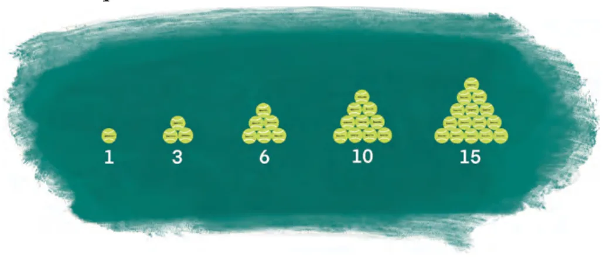
Square numbers are sums of odd numbers
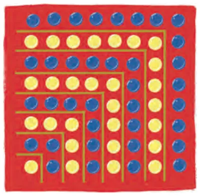
1 = 1, 4 = 1 + 3, 9 = 1 + 3 + 5, 16 = 1 + 3 + 5 + 7, …
In Fig. 8.2 each new L-shaped layer (alternately blue and yellow) wraps around the square before it. The layers have 1, 3, 5, 7, … dots, so
ExPredict the next four terms of 1, 4, 7, 10, 13, … and find the first 10 terms of the sequence of running totals.
The gap is always 3, so the next four terms are 16, 19, 22, 25.
Running totals: 1, 1+4 = 5, 5+7 = 12, 12+10 = 22, 22+13 = 35, 35+16 = 51, 51+19 = 70, 70+22 = 92, 92+25 = 117, 117+28 = 145.
First 10 terms: 1, 5, 12, 22, 35, 51, 70, 92, 117, 145.
A short way to name terms: tn
🔑 Notation
t1 = first term, t2 = second term, …, tn = the term in position n. The small number (subscript) is the position, not the value.
For odd numbers: t1 = 1, t2 = 3, t3 = 5, t4 = 7. So t4 = 7 means “the 4th term is 7”. For different sequences we use different letters: tn, sn, un, …
Terms can be fractions, like 1, 12, 13, 14, … (decreasing), or negative, like −7, −3, 1, 5, 9, … (here s1 = −7 and the gap is 4). The position n is always a counting number, but the term can be any real number.
ExWrite t5, t6, t7 and t8 for the triangular numbers.
t5 = 15, t6 = 15 + 6 = 21, t7 = 21 + 7 = 28, t8 = 28 + 8 = 36.
🤔Think and Reflect: List five different kinds of sequences.
For example: (1) multiples of 5: 5, 10, 15, … (increasing, equal gaps); (2) a countdown 10, 9, 8, … (decreasing); (3) powers of 2: 1, 2, 4, 8, … (each term doubles); (4) prime numbers 2, 3, 5, 7, 11, … (no simple rule); (5) alternating 1, −1, 1, −1, … (repeats).
Explicit rule: a formula for tn
An explicit formula uses the position number n to calculate the term directly. Put in n, get out tn, like a machine.
Example 1: un = 2n − 1
u1 = 2×1 − 1 = 1, u2 = 2×2 − 1 = 3, u3 = 2×3 − 1 = 5, … These are the odd numbers.
Why is it useful? You can jump straight to the 20th, 53rd or 300th term without knowing the terms before it.
ExUsing un = 2n − 1, find the 53rd, 108th and 1170th odd numbers.
u53 = 106 − 1 = 105; u108 = 216 − 1 = 215; u1170 = 2340 − 1 = 2339.
Is a number a term? Solve for n
To check if a number belongs to the sequence, set tn equal to it and solve. If n comes out as a natural number (1, 2, 3, …), it is a term. Otherwise it is not, because there is no “94.6th position”.
Is 137 an odd number term?
2n − 1 = 137 ⟹ 2n = 138 ⟹ n = 69. Yes, the 69th term.
sn = 5n − 2: 308 and 471?
5n − 2 = 308 ⟹ n = 62 ✅ (62nd term).
5n − 2 = 471 ⟹ n = 94.6 ❌ not a term.
Ex 2Write the first 6 terms of sn = 5n − 2. What are the 100th and 1000th terms?
3, 8, 13, 18, 23, 28. s100 = 500 − 2 = 498; s1000 = 5000 − 2 = 4998.
🤔Think and Reflect: What is the rule for the nth square number? Is there a rule for primes?
Square numbers: tn = n². The primes 2, 3, 5, 7, 11, 13, 17, 19, 23, 29 have no simple formula; nobody has found a rule that predicts the next prime easily. That is what makes them so interesting!
🛠️ Number machine
Pick a rule, slide n, and ask whether any number is a term.
ExFor tn = 3n − 7: (i) find t1, t2, t3, t12, t18, t50 (ii) which term is 332? (iii) is 557 a term?
(i) t1 = −4, t2 = −1, t3 = 2, t12 = 29, t18 = 47, t50 = 143.
(ii) 3n − 7 = 332 ⟹ 3n = 339 ⟹ n = 113. So 332 is the 113th term.
(iii) 3n − 7 = 557 ⟹ 3n = 564 ⟹ n = 188, a natural number. Yes, 557 is the 188th term.
Recursive rule: each term from the one before
In 1, 4, 7, 10, 13, … each term is 3 more than the previous one. We can write this as
A recursive rule describes a term using earlier terms. It always needs a starting value, and to find the 50th term you must walk through all the terms before it.
Explicit
Jump straight to any term: tn = 3n − 2.
Like knowing a house number.
Recursive
Climb step by step: tn = tn−1 + 3.
Like following directions “next door”.
Example 3: u1 = 1, un = 2un−1 + 3
u2 = 2×1 + 3 = 5, u3 = 2×5 + 3 = 13, u4 = 2×13 + 3 = 29. First four terms: 1, 5, 13, 29.
Is 133 a term? Keep going: u5 = 61, u6 = 125, u7 = 253. The terms jump from 125 to 253, so 133 is not a term.
Example 4: s1 = 3, sn = sn−1(sn−1 − 1)
s2 = 3 × 2 = 6, s3 = 6 × 5 = 30, s4 = 30 × 29 = 870. First four terms: 3, 6, 30, 870. Notice how fast it grows!
The Virahānka–Fibonacci sequence
A recursive rule can use the previous two (or more) terms. The most famous one is
Each term is the sum of the previous two. The next two terms after 34 are 55 and 89.
🇮🇳 An Indian discovery
This sequence was first written down by Virahānka in the 7th century CE in his book Vṛttajātisamuchaya, while counting rhythms in Prakrit poetry. It was studied further by Gopāla (c. 1135 CE) and Hemachandra (c. 1150 CE), and only later by the Italian mathematician Fibonacci (c. 1200 CE).
🪜 Recursive rule stepper
Choose a rule and press “Next term” to climb one step at a time.
Exercise Set 8.1: solutions
Try each question first, then tap to check.
1.Find the first five terms: (i) tn = 3n − 4, (ii) tn = 2 − 5n, (iii) tn = n² − 2n + 3.
| n | 1 | 2 | 3 | 4 | 5 |
|---|---|---|---|---|---|
| 3n − 4 | −1 | 2 | 5 | 8 | 11 |
| 2 − 5n | −3 | −8 | −13 | −18 | −23 |
| n² − 2n + 3 | 2 | 3 | 6 | 11 | 18 |
For (iii), e.g. t4 = 16 − 8 + 3 = 11 and t5 = 25 − 10 + 3 = 18.
2.Find the 10th and 15th terms of tn = 5n − 3.
t10 = 50 − 3 = 47; t15 = 75 − 3 = 72.
3.Are 97 and 172 terms of tn = 5n − 3?
5n − 3 = 97 ⟹ 5n = 100 ⟹ n = 20 ✅. 97 is the 20th term.
5n − 3 = 172 ⟹ 5n = 175 ⟹ n = 35 ✅. 172 is the 35th term.
4.Which term of tn = 5n − 3 is 607?
5n − 3 = 607 ⟹ 5n = 610 ⟹ n = 122. 607 is the 122nd term.
5.t1 = −5, tn+1 = tn + 3. Find the first five terms. Is 52 a term?
Terms: −5, −2, 1, 4, 7. Each term adds 3, so the explicit rule is tn = −5 + 3(n − 1) = 3n − 8.
3n − 8 = 52 ⟹ 3n = 60 ⟹ n = 20. Yes, 52 is the 20th term.
6.T1 = 1, T2 = 2, T3 = 4, Tn = Tn−1 + Tn−2 + Tn−3. Find T4 to T8.
T4 = 4 + 2 + 1 = 7, T5 = 7 + 4 + 2 = 13, T6 = 13 + 7 + 4 = 24, T7 = 24 + 13 + 7 = 44, T8 = 44 + 24 + 13 = 81.
Arithmetic progressions (AP)
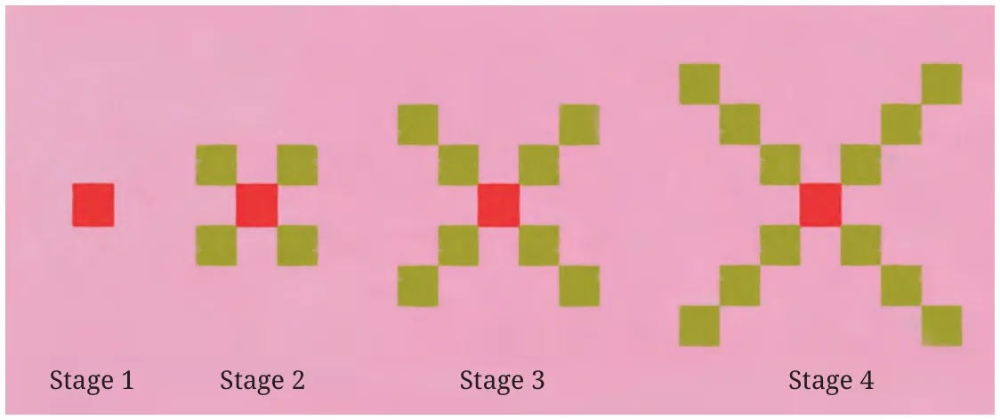
At each stage 4 squares are added, one at each corner. So the counts are
🧩 Build the pattern
🔑 Arithmetic progression
A sequence in which the difference between consecutive terms is constant. This constant is the common difference d.
🤔Think and Reflect: Which sequences in this chapter are APs?
APs: natural numbers (d = 1), odd numbers (d = 2), 1, 4, 7, 10, … (d = 3), −7, −3, 1, 5, … (d = 4), 5n − 2, 3n − 7, the squares pattern 1, 5, 9, 13 (d = 4).
Not APs: triangular numbers and square numbers (gaps keep growing), 1, ½, ⅓, … (gaps shrink), primes, Virahānka numbers, and 6, 12, 24, 48, 96 (it doubles).
8.4.1 Visualising an AP: a straight line!
| Stage | 1 | 2 | 3 | 4 | 5 | n |
|---|---|---|---|---|---|---|
| Squares | 1 | 5 | 9 | 13 | 17 | 4n − 3 |
Plot the pairs (stage, squares): (1, 1), (2, 5), (3, 9), (4, 13), (5, 17). They lie on a straight line. This happens for every AP, because each step right goes up by the same amount d.
📈 AP ⟹ points on a straight line. The steepness of the line is the common difference d.
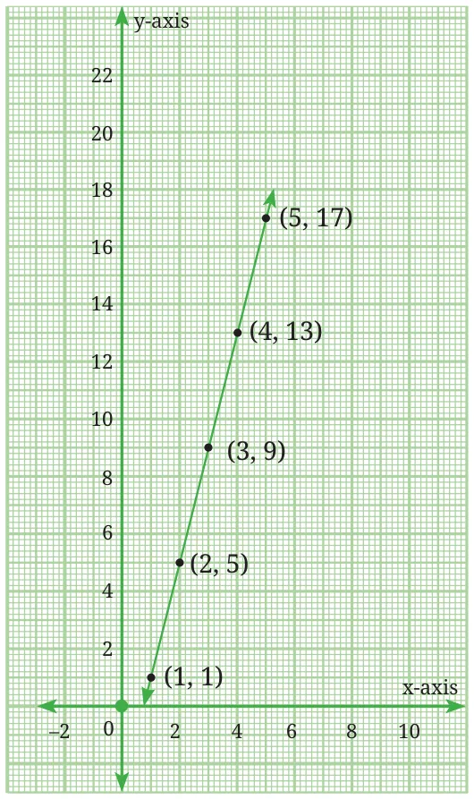
ExShow that (i) 2, 5, 8, 11, … and (ii) −5, −1, 3, 7, … are APs and find their nth terms.
(i) Differences are all 3, so it is an AP with a = 2, d = 3: tn = 2 + (n − 1)3 = 3n − 1.
(ii) Differences are all 4, so a = −5, d = 4: tn = −5 + (n − 1)4 = 4n − 9.
Plotting (n, tn) gives points on a straight line in both cases.
ExFind the nth term of (i) 12, 52, 92, 132, … (ii) 1.5, 3.5, 5.5, 7.5, …
(i) a = 12, d = 2: tn = 12 + 2(n − 1) = 2n − 32 (that is, 4n − 32).
(ii) a = 1.5, d = 2: tn = 1.5 + 2(n − 1) = 2n − 0.5.
ExWrite recursive rules for the APs above.
2, 5, 8, …: t1 = 2, tn = tn−1 + 3. −5, −1, 3, …: t1 = −5, tn = tn−1 + 4.
12, 52, …: t1 = 12, tn = tn−1 + 2. 1.5, 3.5, …: t1 = 1.5, tn = tn−1 + 2.
🚕 Example 5: Taxi fare
Booking fee ₹200 plus ₹40 per km. Fare after 1, 2, 3 km: 240, 280, 320, …, an AP with a = 240, d = 40.
tn = 240 + (n − 1)×40 = 200 + 40n. For 10 km: 200 + 400 = ₹600.
🔬 AP and GP explorer
Choose AP or GP, set the first term and the step, and watch the terms and the graph. AP points line up; GP points curve.
Sum of the first n natural numbers
Can you add 1 + 2 + … + 10 without adding one by one? Write the sum forwards and backwards:
Every column adds to 11, and there are 10 columns. So 2S = 10 × 11 = 110, and S = 55.
The same trick works for any n: S = 1 + 2 + … + n and S = n + (n − 1) + … + 1. Each column adds to (n + 1), and there are n columns:
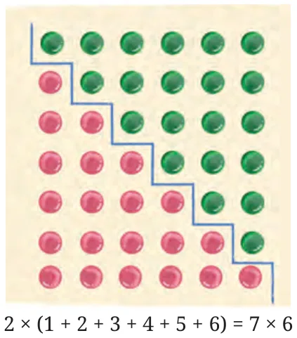
The picture proof. The pink staircase has 1 + 2 + … + 6 circles. The green staircase is the same staircase turned upside down. Together they make a rectangle of 7 × 6 = 42 circles, so one staircase has 42 ÷ 2 = 21.
📜 Āryabhaṭa knew it
The first known written form of this result is in Āryabhaṭa's Āryabhaṭīya (Chapter 2, Verse 19). It says: add the first and last terms, halve it (the average), and multiply by the number of terms.
🟢 Staircase builder
🤔Think and Reflect: Find S20, S50, S100 and S1000.
S20 = 20×212 = 210; S50 = 50×512 = 1275; S100 = 100×1012 = 5050; S1000 = 1000×10012 = 500500.
Sum of a block of numbers: 25 + 26 + … + 58
Take everything up to 58 and remove everything up to 24:
S58 − S24 = 58 × 592 − 24 × 252 = 1711 − 300 = 1411.
🤔Think and Reflect: Triangular numbers are tn = n(n + 1)2. Find the 10th, 17th and 80th.
t10 = 10×112 = 55; t17 = 17×182 = 153; t80 = 80×812 = 3240.
Exercise Set 8.2: solutions
1.Find the 10th and 26th terms of the AP 3, 8, 13, 18, …
a = 3, d = 5. t10 = 3 + 9×5 = 48; t26 = 3 + 25×5 = 128.
2.Which term of 21, 18, 15, … is −81? Is 0 a term?
a = 21, d = −3, so tn = 21 − 3(n − 1) = 24 − 3n.
24 − 3n = −81 ⟹ 3n = 105 ⟹ n = 35. −81 is the 35th term.
24 − 3n = 0 ⟹ n = 8, a natural number. Yes, 0 is the 8th term (21, 18, 15, 12, 9, 6, 3, 0).
3.Find the nth term of 11, 8, 5, 2, … and its recursive rule.
a = 11, d = −3: tn = 11 − 3(n − 1) = 14 − 3n.
Recursive: t1 = 11, tn = tn−1 − 3 for n ≥ 2.
4.An AP has 50 terms; the 3rd term is 12 and the last term is 106. Find the 29th term.
a + 2d = 12 and a + 49d = 106. Subtracting: 47d = 94 ⟹ d = 2, so a = 12 − 4 = 8.
t29 = 8 + 28×2 = 64.
5.How many 2-digit numbers are divisible by 3? What is their sum?
They are 12, 15, 18, …, 99: an AP with a = 12, d = 3. 12 + (n − 1)3 = 99 ⟹ n − 1 = 29 ⟹ n = 30.
Sum = 3 × (4 + 5 + … + 33) = 3 × (S33 − S3) = 3 × (561 − 6) = 1665.
Check with Āryabhaṭa's rule: 302 × (12 + 99) = 15 × 111 = 1665.
6.Harish's salary starts at ₹5,00,000 and rises by ₹20,000 each year. When does it reach ₹7,00,000?
Salaries form an AP: 5,00,000, 5,20,000, 5,40,000, … with d = 20,000.
5,00,000 + (n − 1)×20,000 = 7,00,000 ⟹ n − 1 = 10 ⟹ n = 11.
So in his 11th year, that is after 10 years (10 increments), his salary is ₹7,00,000.
7.Marbles in rows of 1, 2, 3, …, 25. How many marbles in all?
S25 = 25 × 262 = 325 marbles.
Geometric progressions (GP)
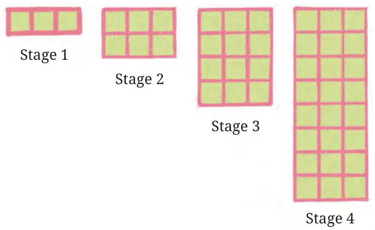
Here the number of squares doubles each stage: 3, 3 + 3 = 6, 6 + 6 = 12, 12 + 12 = 24.
3, 3×2, 3×2², 3×2³, … so tn = 3 × 2n−1.
Recursive: t1 = 3, tn = 2tn−1.
The ratio of each term to the one before is always the same: 63 = 126 = 2412 = 4824 = 9648 = 2. This constant multiplier is the common ratio r.
🔑 Geometric progression
A sequence where each term is the previous term multiplied by a fixed number r.
AP: add the same number
Check the difference t2 − t1, t3 − t2, …
Grows steadily (in a straight line).
GP: multiply by the same number
Check the ratio t₂t₁, t₃t₂, …
Grows (or shrinks) faster and faster.
Example 9: Is 5, 154, 4516, 13564, … a GP?
t₂t₁ = 154 ÷ 5 = 34; t₃t₂ = 4516 × 415 = 34; t₄t₃ = 13564 × 1645 = 34.
The ratio is constant, so it is a GP with a = 5, r = 34: tn = 5 × (34)n−1.
ExAre these GPs? Find tn: (i) 2, 10, 50, 250, … (ii) 4, 83, 169, 3227, … (iii) 3, −32, 34, −38, …
(i) Ratio 5 each time. GP, tn = 2 × 5n−1.
(ii) Ratio 23 each time. GP, tn = 4 × (23)n−1.
(iii) Ratio −12 each time. GP, tn = 3 × (−12)n−1. A negative ratio makes the signs alternate.
ExGive a recursive rule for tn = 3 × 10n−1 (3, 30, 300, 3000, …).
t1 = 3, tn = 10 × tn−1 for n ≥ 2.
🎮 AP, GP or neither?
Look at the gaps and the ratios, then tap your answer.
Fun with fractals
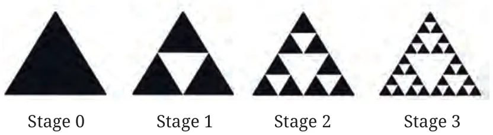
- Stage 0: a black equilateral triangle.
- Join the midpoints of the sides to get 4 smaller triangles and remove the middle one (Stage 1).
- Repeat on every black triangle that is left, again and again, forever!
Number of black triangles
1, 3, 9, 27, 81, 243, … each one becomes 3.
GP with r = 3: tn = 3n (stage n).
Black area (Stage 0 = 1)
1, 34, 916, 2764, … each stage keeps 34.
GP with r = 34: sn = (34)n.
| Stage n | 0 | 1 | 2 | 3 | 4 | 5 | n |
|---|---|---|---|---|---|---|---|
| Black triangles | 1 | 3 | 9 | 27 | 81 | 243 | 3n |
| Black area | 1 | 34 | 916 | 2764 | 81256 | 2431024 | (34)n |
🤯 The surprise: the number of triangles shoots up (243 at stage 5, over 59,000 at stage 10), but the black area keeps shrinking towards 0. Both are GPs: one with r > 1, one with r between 0 and 1.
🤔Think and Reflect: answers to (a) to (d) for the Sierpiński triangle
(a) 1, 3, 9, 27. (b) Stage 4: 81, Stage 5: 243. (c) 3n. (d) Areas: 34, 916, 2764; Stage 4: 81256, Stage 5: 2431024; rule (34)n. As n grows, the area gets closer and closer to 0. Recursive rules: tn = 3 × tn−1 and sn = 34 × sn−1, starting from 1 at stage 0.
🔍 Fractal zoomer
Fractals are shapes that repeat themselves at different scales: zoom into a small part and it looks like the whole. You see them in tree branches, cauliflower and broccoli, snowflakes and coastlines. Simple rules, beautiful designs.
👤 Wacław Sierpiński (1882–1969)
A Polish mathematician who gave us the Sierpiński gasket (triangle), one of the earliest and most famous fractals.
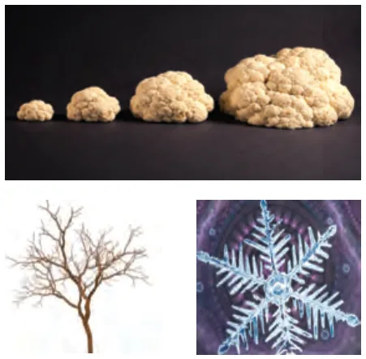
Visualising a GP: a curve, not a line
| Stage | 1 | 2 | 3 | 4 | 5 | n |
|---|---|---|---|---|---|---|
| Squares | 3 | 6 | 12 | 24 | 48 | 3×2n−1 |
Plot (1, 3), (2, 6), (3, 12), (4, 24), (5, 48). The points do not lie on a straight line. They bend upwards more and more steeply, because each jump is bigger than the last.
📈 AP ⟹ straight line. 📈 GP ⟹ curve that bends up (r > 1) or flattens down towards 0 (0 < r < 1).
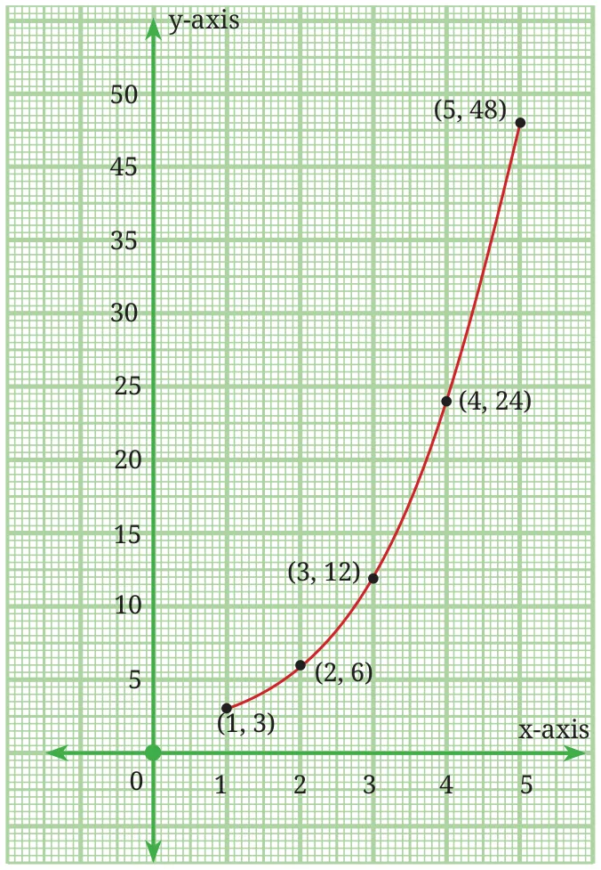
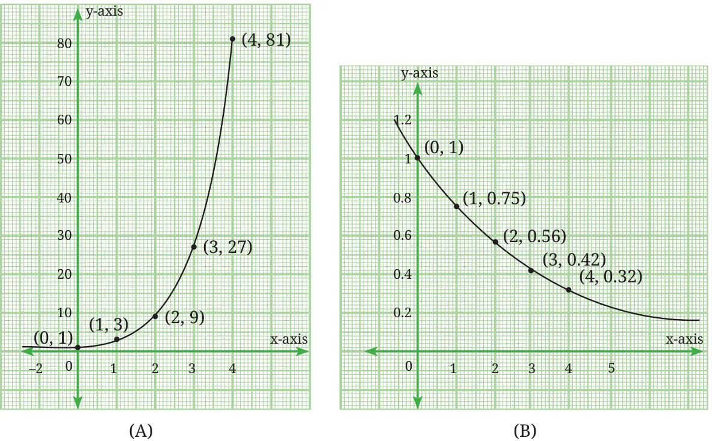
🏁 Race: AP vs GP
AP: 3, 6, 9, 12, … (add 3). GP: 3, 6, 12, 24, … (double). They start the same. Who wins?
Example 10: The bouncing ball
A ball is dropped from 24 feet. Each bounce reaches 34 of the previous height.
| Bounce | Height (ft) |
|---|---|
| 1st | 24 × 0.75 = 18 |
| 2nd | 18 × 0.75 = 13.5 |
| 3rd | 13.5 × 0.75 = 10.125 |
| 4th | 10.125 × 0.75 ≈ 7.594 |
| 5th | ≈ 5.695 |
| 6th | ≈ 4.271 |
| 7th | ≈ 3.203 |
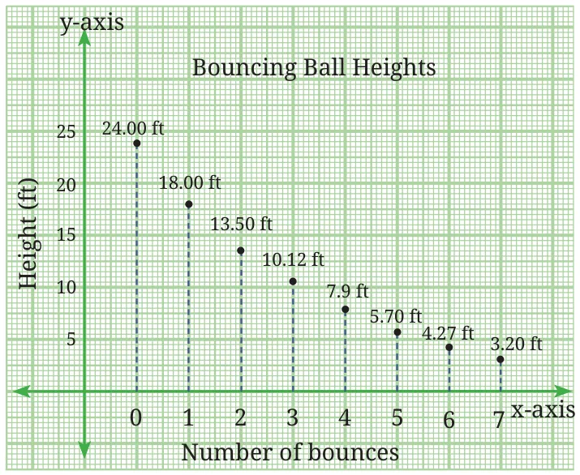
(a) The heights 18, 13.5, 10.125, 7.594, 5.695, … form a GP with a = 18 and r = 34.
(b) 16 of 24 ft is 4 ft. After the 6th bounce the ball still reaches 4.27 ft, but after the 7th bounce it reaches only 3.20 ft. So 7 bounces are needed.
⚽ Bounce lab
Exercise Set 8.3: solutions
1.A GP has r = 2 and 8th term 192. Find the 12th term.
From the 8th to the 12th term we multiply by r four times: t12 = 192 × 24 = 192 × 16 = 3072.
2.Find the 10th and nth terms of 5, 25, 125, …
a = 5, r = 5: tn = 5 × 5n−1 = 5n. t10 = 510 = 97,65,625.
3*.t1 = 2, tn+1 = 3tn − 2. Which term is 730?
Terms: 2, 3×2−2 = 4, 3×4−2 = 10, 28, 82, 244, 3×244−2 = 730. That is the 7th term.
Pattern spotted: each term is one more than a power of 3 (2 = 3⁰+1, 4 = 3¹+1, 10 = 3²+1, …), so tn = 3n−1 + 1 and 730 = 3⁶ + 1 gives n = 7.
4.Which term of 2, 6, 18, … is 4374? Give explicit and recursive formulas.
a = 2, r = 3: tn = 2 × 3n−1. 2 × 3n−1 = 4374 ⟹ 3n−1 = 2187 = 37 ⟹ n = 8. 4374 is the 8th term.
Explicit: tn = 2 × 3n−1. Recursive: t1 = 2, tn = 3tn−1.
5.A ball dropped from 80 m bounces to 60% of its fall each time. (i) Height after the 5th bounce? (ii) Total vertical distance when it hits the ground the 6th time?
Bounce heights: 48, 28.8, 17.28, 10.368, 6.2208 m (GP, r = 0.6).
(i) 80 × 0.65 = 6.2208 m ≈ 6.22 m.
(ii) First fall 80 m. Then each of the 5 bounces goes up and comes down again before the 6th hit: 2 × (48 + 28.8 + 17.28 + 10.368 + 6.2208) = 2 × 110.6688 = 221.3376 m.
Total = 80 + 221.3376 = 301.3376 m ≈ 301.34 m.
6.Which term of 2, 2√2, 4, … is 128?
r = √2. tn = 2(√2)n−1 = 128 ⟹ (√2)n−1 = 64 = 26 = (√2)12 ⟹ n − 1 = 12 ⟹ n = 13.
7.Sierpiński square carpet (Fig. 8.12): red squares and red area at each stage.
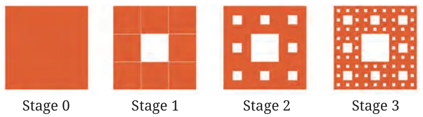
Each square is cut into 9 and the middle one is removed, so every red square becomes 8 squares, and the area is multiplied by 89.
(i) Stages 0 to 3: 1, 8, 64, 512 red squares.
(ii) Stage 4: 84 = 4096; Stage 5: 85 = 32768.
(iii) Explicit: tn = 8n (stage n). Recursive: t0 = 1, tn = 8 × tn−1.
(iv) Areas: Stage 1: 89, Stage 2: 6481, Stage 3: 512729, Stage 4: 40966561, Stage 5: 3276859049. Explicit: sn = (89)n; recursive: s0 = 1, sn = 89 × sn−1. As n grows, the red area gets closer and closer to 0 (slowly, because 89 is close to 1).
End-of-chapter exercises
1.Find the 31st term of an AP whose 11th term is 38 and 16th term is 73.
a + 10d = 38 and a + 15d = 73. Subtracting: 5d = 35 ⟹ d = 7, so a = 38 − 70 = −32.
t31 = −32 + 30×7 = 178.
2.Find the AP whose 3rd term is 16 and whose 7th term exceeds the 5th term by 12.
t7 − t5 = 2d = 12 ⟹ d = 6. a + 2d = 16 ⟹ a = 4.
The AP is 4, 10, 16, 22, 28, …
3*.How many three-digit numbers are divisible by 7?
Smallest: 105 (7 × 15). Largest: 994 (7 × 142). AP with a = 105, d = 7.
105 + (n − 1)7 = 994 ⟹ (n − 1)7 = 889 ⟹ n − 1 = 127 ⟹ n = 128.
4*.How many multiples of 4 lie between 10 and 250?
From 12 to 248, with d = 4: 12 + (n − 1)4 = 248 ⟹ n − 1 = 59 ⟹ n = 60.
5*.Find a GP where the sum of the first two terms is −4 and the 5th term is 4 times the 3rd term.
ar4 = 4ar2 ⟹ r2 = 4 ⟹ r = 2 or r = −2.
a + ar = −4. If r = 2: 3a = −4, a = −43 → −43, −83, −163, …
If r = −2: −a = −4, a = 4 → 4, −8, 16, −32, … Both GPs work.
6*.Find all ways of writing 100 as a sum of consecutive natural numbers.
If k numbers start at m: sum = k(2m + k − 1)2 = 100, so k(2m + k − 1) = 200. Try the factors of 200 with k ≥ 2:
- k = 5: 2m + 4 = 40 ⟹ m = 18 → 18 + 19 + 20 + 21 + 22 = 100
- k = 8: 2m + 7 = 25 ⟹ m = 9 → 9 + 10 + 11 + 12 + 13 + 14 + 15 + 16 = 100
- k = 2, 4, 10, 20, 25, 40, … give m that is not a natural number.
So there are two ways (three if you count “100” on its own).
7*.30 bacteria double every hour. How many after 2 hours, 4 hours, n hours?
GP: 30, 60, 120, 240, 480, … After 2 hours: 120; after 4 hours: 480; after n hours: 30 × 2n.
8*.In an AP, t4 + t8 = 24 and t6 + t10 = 44. Find the first three terms.
2a + 10d = 24 and 2a + 14d = 44. Subtracting: 4d = 20 ⟹ d = 5, so 2a = −26, a = −13.
First three terms: −13, −8, −3.
9*.Smallest n for which 1 + 2 + … + n is greater than 1000.
We need n(n + 1) > 2000. 44 × 45 = 1980 (S44 = 990, too small) and 45 × 46 = 2070 (S45 = 1035). So n = 45.
10*.Which term of 2, 8, 32, … is 131072? Give explicit and recursive formulas.
a = 2, r = 4: 2 × 4n−1 = 131072 ⟹ 4n−1 = 65536 = 48 ⟹ n = 9.
Explicit: tn = 2 × 4n−1. Recursive: t1 = 2, tn = 4tn−1.
11*.The first three terms of a GP add to 1312 and multiply to −1. Find r and the terms.
Take the terms as ar, a, ar. Product = a3 = −1 ⟹ a = −1.
Sum: −1r − 1 − r = 1312 ⟹ r + 1r = −2512 ⟹ 12r2 + 25r + 12 = 0 ⟹ (4r + 3)(3r + 4) = 0.
r = −34 gives 43, −1, 34; r = −43 gives 34, −1, 43 (the same numbers in reverse).
12*.If the 4th, 10th and 16th terms of a GP are x, y, z, prove that x, y, z are in GP.
x = ar3, y = ar9, z = ar15. Then yx = r6 and zy = r6.
The ratios are equal (r6), so x, y, z are in GP (equivalently y2 = xz).
13*.Three terms of a GP add to 26 and their squares add to 364. Find them.
Terms a, ar, ar². a(1 + r + r²) = 26 … (1) and a²(1 + r² + r⁴) = 364 … (2).
Use 1 + r² + r⁴ = (1 + r + r²)(1 − r + r²). Dividing (2) by (1): a(1 − r + r²) = 14 … (3).
(1) − (3): 2ar = 12 ⟹ ar = 6. (1) + (3): 2a(1 + r²) = 40 ⟹ a + ar² = 20 ⟹ 6r + 6r = 20 ⟹ 3r² − 10r + 3 = 0 ⟹ r = 3 or 13.
The terms are 2, 6, 18 (or 18, 6, 2). Check: 2 + 6 + 18 = 26 and 4 + 36 + 324 = 364 ✅
14*.P1 = 1, P2 = 2, Pn = P1 + … + Pn−1 + 1. Find P1 to P8 and simpler formulas.
P3 = 1 + 2 + 1 = 4, P4 = 1 + 2 + 4 + 1 = 8, and so on: 1, 2, 4, 8, 16, 32, 64, 128.
Since Pn = (P1 + … + Pn−2 + 1) + Pn−1 = Pn−1 + Pn−1, the simpler rule is Pn = 2Pn−1, and the explicit rule is Pn = 2n−1.
15*.W1 = 1, W2 = 2, Wn = W1 + … + Wn−2 + 2. Find W1 to W8.
W3 = 1 + 2 = 3, W4 = 1 + 2 + 2 = 5, W5 = 1 + 2 + 3 + 2 = 8, W6 = 13, W7 = 21, W8 = 34.
1, 2, 3, 5, 8, 13, 21, 34: the Virahānka–Fibonacci sequence! (Subtracting consecutive rules gives Wn − Wn−1 = Wn−2.)
Formula sheet and chapter summary
Sequence
Ordered list of numbers. tn = term in position n.
Explicit rule
tn in terms of n, e.g. tn = 2n − 1. Is x a term? Solve tn = x; n must be a natural number.
Recursive rule
Start value + rule using earlier terms, e.g. Vn = Vn−1 + Vn−2.
AP
a, a+d, a+2d, …
tn = a + (n − 1)d
tn = tn−1 + d
GP
a, ar, ar², …
tn = arn−1
tn = r × tn−1
Sum 1 to n
Sn = n(n + 1)2 = nth triangular number.
m + … + n = Sn − Sm−1
Graphs
AP points: straight line.
GP points: a curve.
Two unknowns
Given two terms of an AP, write a + (p−1)d and a + (q−1)d, subtract to get d.
Fractals
Sierpiński triangle: 3n triangles, area (34)n.
Carpet: 8n squares, area (89)n.
📝 Chapter summary
- A sequence is an ordered list of numbers; each number is a term.
- An explicit formula uses the position n to calculate the term's value.
- A recursive formula gives a term using the values of previous terms.
- Triangular numbers 1, 3, 6, 10, 15, …: tn = n(n + 1)2, which is also the sum of the first n natural numbers.
- An AP adds a fixed number d (common difference): tn = a + (n − 1)d.
- A GP multiplies by a fixed number r (common ratio): tn = arn−1.
- Fractals such as the Sierpiński triangle and the Sierpiński carpet lead to GPs.
Test yourself
Tap an answer. You get one try per question.
1. What is the 20th term of tn = 4n − 3?
4 × 20 − 3 = 77.
2. Which of these is an AP?
The difference is always −3.
3. Common ratio of 81, 27, 9, 3, …?
27 ÷ 81 = 13.
4. 1 + 2 + 3 + … + 40 = ?
40 × 412 = 820.
5. Is 100 a term of tn = 3n + 2?
3n = 98 gives n = 32.67, not a natural number.
6. Next Virahānka number after 13, 21, 34?
21 + 34 = 55.
7. t1 = 2, tn = 3tn−1. What is t4?
2, 6, 18, 54.
8. Plotting (n, tn) for an AP gives…
Each step adds the same d, so the points line up.
9. Black triangles at Stage 4 of the Sierpiński triangle?
34 = 81.
10. In an AP, a = 5 and t6 = 30. What is d?
5 + 5d = 30 ⟹ d = 5.